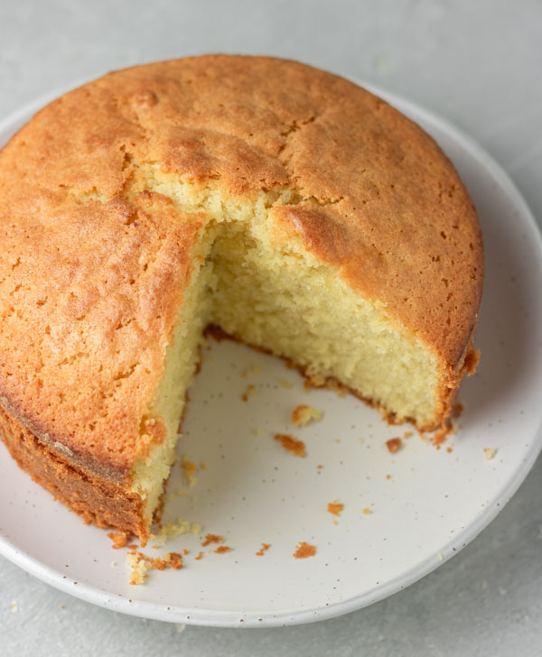

Plain Cake
Home

Ingredients
- FLour - 500g
- Butter - 400g
- Sugar - 400g
- Golden syrup (optional) - 2tbsp
- Milk - 250ml
- Buttermilk - 1 cup milk and 1tbsp vinegar
- Eggs - 10
- nutmeg (optiona)
- Pinch of salt
- Baking powder - 2tbsp
- Flavour
- Baking soda - a pinch
- Alcohol (preservative) - 1/2 cup
Directions
- Cream butter and sugar using a mixer or spatula till it becomes fluffy or double in size.
- In a seperate bowl, mix/seive together all dry ingredients.
- Whisk eggs in a seperate bowl till soft peak.
- Pre-heat oven to 1800C and grease pan.
- add eggs, then dry ingredients to the creamed butter (in batches or in bits).
- Add milk and flavour, mix on medium speed.
- Pour batter in greased pan and bake.